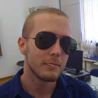
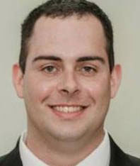
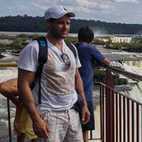
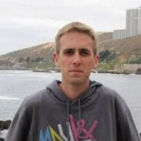
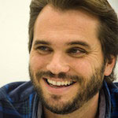
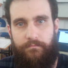
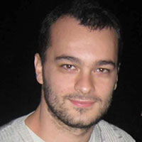
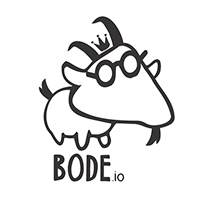

6 - 10 de Abril / 2015
Faccat - Taquara
A TechParty é um evento totalmente gratuito e aberto a toda a comunidade, visa promover a tecnologia e compartilhamento de conhecimento. Serão duas talks por noite durante uma semana inteira dedicada a promover tecnologias e experiências com profissionais qualificados em suas áreas de atuação.
As atividades serão ministradas por profissionais internos e de fora da instituição.
O evento também irá gerar certificado. Então, quem comparecer, pode contar com ele.
-

Rodrigo Nascimento
orodrigok
Rodrigo Nascimento é desenvolvedor JavaScript desde 2008, front-end e back-end, entusiastas de novas tecnologias principalmente relacionadas a JavaScript. Trabalha com Node.js, MongoDB e AngularJS em sua startup Carddi.
-

Leonardo Augusto Sápiras
leonardo.sapiras
Técnico em Eletrônica (Cimol), bacharel em Sistemas de Informação (FACCAT), mestre em Ciência da Computação (UFRGS). Possui 10 anos de experiência profissional no desenvolvimento de aplicações WEB e bancos de dados (PostgreSQL e MySQL), além de três anos de experiência acadêmica com tecnologias para mineração de dados. Atualmente é Coordenador do Núcleo de Sistemas Administrativos da FACCAT e professor na FACCAT. Curte pesquisas relacionadas a mineração de dados e data science.
-

Eduardo Brandes
edubrandes
Eduardo Brandes, Técnico em Eletrônica, Bacharel em Sistemas de Informação e Mestre em Ciência da Computação pela PUCRS. Possui 14 anos de experiência na área de TI, desenvolvedor Java na Hewlett Packard, atua há 5 anos como líder da equipe de Business Intelligence na Zenvia, empresa líder no Brasil em Integração Mobile e SMS Corporativo. Trabalhando com implementações de BI Open Source, focado na performance em grandes volumes, integração de dados, projeto e arquitetura de informação.
-

Rafael Eyng
rafaeleyng
Rafael Eyng trabalha com desenvolvimento de software desde 2013. Começou com desenvolvimento mobile em Objective-C e agora trabalha com desenvolvimento web, com JavaScript e Java, na CWI Software.
-

Rodrigo Barros
rodrigobarrostv
Fundador e CEO da HandsOn.TV plataforma de tecnologia em video, focada em empreendedorismo, criada no Vale do Silicio que hoje esta presente em mais de 50 países e mentor da maior competição de startups da Europa Leweb Startup Tour. Após a carreira de jogador de futebol profissional, Rodrigo se tornou apresentador de TV e empreendedor. Como apresentador, se tornou uma das maiores referencias de programas de negócios do país onde atuou por 9 anos na TV Gazeta e RedeTV. Durante este período publicou a revisita Segredo do Sucesso e realizou mais de 120 eventos com o Forum Empresarial Regional, além de se associar a empresa de painel de midia eletronica ROB Midia e a empresa de educacao UnifoxMBA. Em 2013 Rodrigo foi para o Vale do Silicio, onde fundou a plataforma em video focada em empreendedorismo HandsOn.TV que hoje ja esta presente em mais de 50 países. Fundou a competição de Startups Pitchit, na qual é mentor das startups e apresentador e o que lhe trouxe o convite para apresentar a maior competição de startups da Europa LeWeb Startup Tour. Rodrigo é também sócio da Salad Creations, rede de franquias de alimentação saudável com 29 restaurantes no Brasil e membro do Conselho de Administração da FlexForm maior industria de cadeiras para o mercado corporativo da America Latina. Recentemente lançou o programa #PerguntaproRB para compartilhar suas experiencias e aprendizados e fomentar a cultura empreendedora.
-

Everton Luís Berz
evertonberz
Everton Luís Berz, técnico em Processamento de Dados pelo Instituto Sinodal Dorothea Schäfke, bacharel em Sistemas de Informação pela FACCAT, mestre em Ciência da Computação e doutorando em Ciência da Computação pela PUCRS. Possui 16 anos de experiência profissional na área de TI, sendo os últimos 3 anos em órgãos da administração pública estadual e federal. Já atuou como desenvolvedor, analista de sistemas, analista de infraestrutura e administrador de banco de dados. Atualmente é analista judiciário (especialidade TI) no Tribunal Regional do Trabalho da 4ª região e professor na FACCAT. Trabalha com administração de SGBD's e servidores de aplicação em ambientes de alta disponibilidade, com foco em implementações open source.
-
Marlon Bernardes
marlonbernardes
Começou a fazer sites por diversão aos 13 anos de idade. Atua com desenvolvimento web e desktop há 8 anos. Apaixonado pelo que faz, hoje em dia é líder técnico na CWI Software e programa principalmente em Java, Javascript e Scala. Possui uma paixão recente - e tardia - por Ruby. Odeia estimativas. Gosta de metodologias ágeis, entrega contínua e todos os tipos de testes automatizados. Fundador da Instaweb, empresa que presta consultoria e treinamento em desenvolvimento de software. Dá aulas de programação em Java, Javascript e ajudou dezenas de alunos a iniciar a carreira na área de desenvolvimento de software.
-

Gabriel Bender
gabrielgbender
É Designer de Experiência com mais de 10 anos de mercado. Trabalhou também como desenvolvedor Front End. Já realizou projetos de experiência para marcas como Petrobras, O Boticário, Lacta, Grêmio e Telefonica. Atualmente é Designer de Experiência na Brivia.
-

Bode.io
cicero.rolim paulobridi1 santiago.andreuzza
Formados em Sistemas da Informação, os três se conheceram quando ocupavam posições importantes na Hewlett-Packard. A ideia de criar um modelo mais leve e inovador fez com que eles começassem o próprio negócio: Bode.io. Um bureau especializado em plataformas web, sistemas e apps. Em menos de um ano, a Bode.io lançou diversos projetos corporativos para líderes de mercado em campos como a gastronomia, construção, educação e muitos outros. O trio também é reconhecido pelos seus trabalhos autorais. O site Muambator (plataforma de trackeamento de entregas), por exemplo, é um fenômeno web. Ocupa atualmente o top 650, dentre todos os sites do Brasil – sem nunca ter feito um único anúncio. Outro bom exemplo é o Lance-a-lance. O projeto alcançou a posição #2 entre todos os aplicativos da Appstore Brasil. Em 2014, a Bode.io se fundiu com a Perestroika para formar a Aeroli.to. E o início do casamento não poderia ser melhor.
-
Marcus Sá
sa_vini
Desenvolvedor frontend, backend e mobile há mais de há mais de 10 anos. Co-founder do Bicharia.com.br e entusiasta novas formas de trabalho e criatividade. Atualmente é freelancer na Mamute.us, trabalhando remoto para diversas empresas no Brasil.